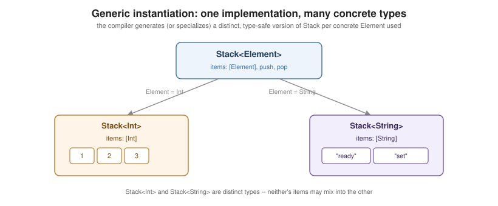

Generics
|
This content was generated with the assistance of AI and should be verified against the official documentation before being relied on in production. |
Generics let a function or type be written once and used with any type that satisfies the requirements it
states, instead of duplicating the same logic per concrete type or giving up type safety by falling back to
Any. They are the mechanism behind almost every standard-library type already used throughout this reference — Array<Element>, Optional<Wrapped>, Dictionary<Key, Value> — and behind the protocol-oriented patterns in
Protocols.
The Problem Generics Solve
func swapInts(_ a: inout Int, _ b: inout Int) {
let temporary = a
a = b
b = temporary
}
func swapStrings(_ a: inout String, _ b: inout String) { // identical body, only the type differs
let temporary = a
a = b
b = temporary
}Without generics, swapping two Int values and swapping two String values require two separate functions with
identical bodies — the logic has nothing to do with Int or String specifically, only the shape of "two
values of the same type" matters. Generic code names that shape once with a placeholder type and lets the
compiler generate (or dynamically witness) the concrete version for every type actually used, with the same
compile-time type checking a non-generic function gets.
Generic Functions and Types
func swapValues<T>(_ a: inout T, _ b: inout T) { // one function replaces swapInts and swapStrings both
let temporary = a
a = b
b = temporary
}
var x = 3
var y = 7
swapValues(&x, &y) // T is inferred as Int at the call site
struct Stack<Element> { // a generic type: Element is a placeholder, not a real type
private var items: [Element] = []
mutating func push(_ item: Element) {
items.append(item)
}
mutating func pop() -> Element? {
items.popLast()
}
}
var integerStack = Stack<Int>() // Stack instantiated with Element = Int
integerStack.push(1)
var stringStack = Stack<String>() // a separate instantiation with Element = String
stringStack.push("ready")A generic function declares one or more type parameters in angle brackets right after its name (<T> above);
each type parameter stands in for a real type that isn’t known until the function is called, and every use of
that parameter within the function’s signature and body must agree with each other (both a and b are T,
so swapValues can never be called with an Int and a String). A generic type — a struct, class, or
enumeration — declares its type parameters the same way right after its name; each concrete type used at the
point of instantiation (Stack<Int>, Stack<String>) produces its own independent version of the type, sharing
one implementation but never mixing their stored data.

Type Parameters, Naming, and Extending Generic Types
func firstAndLast<T, U>(_ pair: (first: T, second: U)) -> (T, U) { // multiple, independently-named parameters
(pair.first, pair.second)
}
extension Stack { // extending a generic type: no parameter list repeated here
var topItem: Element? { // the extension's members still see Element as the type it stands for
items.last
}
}
extension Stack where Element: Equatable { // an extension can add its own constraint (see below)
func isTop(_ item: Element) -> Bool {
topItem == item
}
}A type parameter’s name is arbitrary, but convention favors a single uppercase letter (T, U, V) when the
parameter is a placeholder with no more specific meaning, and a descriptive UpperCamelCase name (Element,
Key, Value, RawValue) when it plays a specific, well-known role — exactly as the standard library names
Array's Element and Dictionary's Key/Value. Extending a generic type never repeats its type-parameter
list (extension Stack { }+, not +extension Stack<Element> { }); the original parameter names are already in
scope for every member the extension adds, and the extension itself can attach a further constraint with where
that only some instantiations of the type satisfy.
Type Constraints
func findIndex<T: Equatable>(of valueToFind: T, in array: [T]) -> Int? { // T must conform to Equatable
for (index, value) in array.enumerated() where value == valueToFind { // == requires Equatable
return index
}
return nil
}
class Named {}
func onlyClasses<T: Named>(_ value: T) {} // a class constraint, instead of a protocol constraintAn unconstrained type parameter (plain <T>) supports only operations every type supports — assignment,
passing around — since the compiler cannot assume anything else about it. A type constraint, written
<T: SomeProtocol> or <T: SomeClass>, requires every type substituted for T to conform to that protocol (or
inherit from that class), which is what lets findIndex use == (an Equatable requirement) in its body at all — exactly the same constraint syntax used on an associated type, covered next.
Associated Types, with Constraints and where
protocol Container {
associatedtype Item: Equatable // an associated type can itself carry a constraint
var count: Int { get }
mutating func append(_ item: Item)
subscript(index: Int) -> Item { get }
}
extension Stack: Container {} // Item is inferred as Element from the members Stack already has
func allItemsMatch<C1: Container, C2: Container>(_ container1: C1, _ container2: C2) -> Bool
where C1.Item == C2.Item // a same-type requirement relating the two associated types
{
guard container1.count == container2.count else { return false }
for index in 0..<container1.count where container1[index] != container2[index] {
return false
}
return true
}An associatedtype gives a protocol its own generic-like placeholder: a conforming type supplies the actual type
(often inferred automatically, as Stack's Item is inferred to be Element above) rather than the caller
choosing it as with a generic parameter. An associated type can carry its own constraint (Item: Equatable), and
a where clause after a function’s parameter list can further constrain how two generic types' associated
types relate to each other — C1.Item == C2.Item is a same-type requirement, satisfiable only when both
containers hold the same kind of item.
Generic where Clauses: Declarations, Extensions, and Contextual Positions
func anyCommonElements<T: Sequence, U: Sequence>(_ lhs: T, _ rhs: U) -> Bool
where T.Element: Equatable, T.Element == U.Element // where clause on the declaration itself
{
for lhsItem in lhs {
for rhsItem in rhs where lhsItem == rhsItem { // "contextual" where: filters a for-in loop
return true
}
}
return false
}
extension Stack where Element: Equatable { // where clause on an extension (seen above too)
func contains(_ item: Element) -> Bool {
items.contains(item)
}
}
protocol SuffixableContainer: Container {
associatedtype Suffix: SuffixableContainer where Suffix.Item == Item // where clause on an associated type
func suffix(_ size: Int) -> Suffix
}A where clause can appear in several positions, each restricting something different: after a generic
function’s or type’s parameter list (constraining the type parameters themselves), on an extension (restricting
which instantiations of a generic type the extension’s members apply to), on an associatedtype declaration
(constraining the associated type in terms of the protocol’s own Self or other associated types), and
contextually on a for-in loop or other pattern-matching construct, where it acts as an extra filter rather
than a generic constraint at all (see Control Flow and
Pattern Matching for that second, unrelated use of the
same keyword).
Generic Subscripts
extension Stack {
subscript<Indices: Sequence>(indices: Indices) -> [Element] // a subscript with its own type parameter
where Indices.Element == Int
{
indices.map { items[$0] }
}
}
let letters = Stack<Character>()
// letters[[0, 2]] would return the elements at positions 0 and 2, generic over any Sequence of IntA subscript can declare its own type parameters in angle brackets after subscript, independent of (and, on a
generic type, in addition to) the enclosing type’s own parameters, with a where clause allowed in the same
position a generic function’s would be — the plain, non-generic subscript syntax itself is covered in
Methods and Subscripts.
Implicit Constraints: Copyable, and Suppressing It on a Generic Parameter
func duplicate<T>(_ value: T) -> (T, T) { // T is implicitly constrained to Copyable -- this compiles
(value, value)
}
func store<T: ~Copyable>(_ value: consuming T) -> [T] { // ~Copyable suppresses the implicit constraint
[value] // a noncopyable T can appear here, but never be
} // duplicated -- only movedEvery generic type parameter implicitly requires Copyable (and Escapable) unless told otherwise, exactly like
an ordinary type declaration (see Structures and
Classes for ~Copyable types themselves) — which is why duplicate above can freely return two copies of T
with no constraint written at all. Writing ~Copyable in a type parameter’s own constraint list, as store
does, suppresses that implicit requirement for this one generic context, letting a noncopyable type be
substituted for T; the tradeoff is that the generic code itself can then no longer assume it may copy a T
value, only move (consuming) or borrow it.
Integer Generic Parameters (Swift 6.2)
let fixed: InlineArray<3, Int> = [1, 2, 3] // 3 is a *value*, not a type -- an integer generic parameter
// InlineArray<count, Element>: count is fixed at compile time and is part of the type itselfSwift 6.2 extended generic parameter lists beyond types to plain integer literals: InlineArray<3, Int>'s
first parameter, 3, is a compile-time integer value baked into the type itself, not a further placeholder type — InlineArray<3, Int> and InlineArray<4, Int> are as distinct as Stack<Int> and Stack<String> are. This
is what lets InlineArray store its elements inline with a size fixed at compile time and no heap allocation at
all; see Collections for InlineArray and Span in full.
some P as Lightweight Generic-Parameter Syntax
func sum(_ values: some Sequence<Int>) -> Int { // equivalent to <S: Sequence<Int>>(_ values: S)
values.reduce(0, +)
}
func genericSum<S: Sequence<Int>>(_ values: S) -> Int { // the fully spelled-out generic equivalent
values.reduce(0, +)
}Writing some P directly on a parameter’s type is shorthand for an ordinary generic type parameter constrained
to P, without naming that parameter at all — sum above is exactly equivalent to genericSum, just without
the <S: Sequence<Int>> list, and both are still true generics: the compiler still generates (or specializes)
code per concrete type substituted at the call site, and the caller still fully determines the concrete type,
unlike any P. See Opaque and Boxed
Protocol Types for some used as a return type (where the two cases — parameter and return position — differ
in who chooses the concrete type) and for the full comparison against any.
Worked Example: A Typed Shelf and a Repository
Generics let one piece of code work for many types while staying fully type checked. In the bookshelf, Shelf<Item>
stores items of exactly one kind; a constrained extension adds an API only for hashable items; a function constrains
a sequence’s element type; and a Repository protocol uses an associated type to say "I store some kind of lendable
thing".
protocol Lendable {
var title: String { get }
var loanDays: Int { get }
}
struct Book: Lendable, Hashable { let title: String; var loanDays: Int { 21 } }
struct Dvd: Lendable, Hashable { let title: String; var loanDays: Int { 7 } }
// A generic type: Shelf stores ONE kind of lendable item, fixed at compile time.
struct Shelf<Item: Lendable> {
private(set) var items: [Item] = []
mutating func add(_ item: Item) { items.append(item) }
var longestLoan: Item? { items.max { $0.loanDays < $1.loanDays } }
var totalDays: Int { items.reduce(0) { $0 + $1.loanDays } }
}
// Constrained extension: only available when Item is Hashable.
extension Shelf where Item: Hashable {
var distinctCount: Int { Set(items).count }
}
// A generic function with two constraints and a where clause.
func overdueReport<S: Sequence>(_ items: S, after days: Int) -> [String]
where S.Element: Lendable {
items.filter { $0.loanDays < days }.map(\.title)
}
// An associated type: a protocol that is generic over what it stores.
protocol Repository {
associatedtype Entity: Lendable
var all: [Entity] { get }
func find(title: String) -> Entity?
}
struct InMemoryRepository<E: Lendable>: Repository {
let all: [E]
func find(title: String) -> E? { all.first { $0.title == title } }
}
// Generic code over a protocol with an associated type.
func firstTitle<R: Repository>(in repo: R) -> String { repo.all.first?.title ?? "(empty)" }
var books = Shelf<Book>()
books.add(Book(title: "Emma"))
books.add(Book(title: "Emma"))
books.add(Book(title: "Kim"))
print(books.totalDays, books.distinctCount, books.longestLoan?.title ?? "-")
var dvds = Shelf<Dvd>()
dvds.add(Dvd(title: "Alien"))
print(dvds.totalDays)
// var mixed = Shelf<Lendable>() // error: type 'any Lendable' cannot conform to 'Lendable'
print(overdueReport([Book(title: "A"), Book(title: "B")], after: 30))
print(firstTitle(in: InMemoryRepository(all: [Dvd(title: "Alien")])))
print(type(of: books), type(of: dvds))63 2 Emma
7
["A", "B"]
Alien
Shelf<Book> Shelf<Dvd>-
One definition, many types.
Shelf<Book>andShelf<Dvd>are different types. A shelf of books cannot accept a DVD, which the compiler enforces; the last line prints the two distinct specialisations. -
Constraints unlock operations. Inside
Shelf,Item: Lendableis what allows$0.loanDays. Without the constraint,Itemis an opaque placeholder with no members at all. -
Conditional availability.
distinctCountexists only forShelf<Item>whereItem: Hashable; it printed 2 for two equal and one different title. For an item type that is not hashable the property simply does not exist. -
Shelf<any Lendable>is not the same as a shelf of anything. The compiler rejects it, because the box typeany Lendabledoes not conform toLendable; to mix kinds, store[any Lendable](see Opaque and Boxed Protocol Types). -
Associated types are generic parameters that the conformer chooses. Callers of
firstTitle(in:)need not name the entity type; it is inferred from the repository.
Specialisation: What the Compiler Does
A generic function is compiled once in a general form that works through witness tables (like the existential
container on the page linked above). In an optimised build the compiler usually specialises it: it copies the body for
each concrete type it sees, replaces witness-table calls with direct calls and can then inline them. The result is the
speed of hand-written code for Book and for Dvd at the cost of larger binaries.
Across module boundaries, a generic function that is not marked @inlinable is called in its generic form, because
the caller cannot see the body.
Pitfalls
-
Type parameters are inferred, not guessed: an empty array literal
[]passed to a generic function has no element type to infer and needs an annotation. -
Shelf<Item>is a struct, so copying a shelf copies the array independently; ifItemis a class, the instances inside the two copies are still shared. -
Overusing generics for a single concrete use makes error messages harder to read. Start concrete, then generalise when a second use appears.
-
Using
whereclauses on an extension, rather than a separate generic function, keeps related operations discoverable from the type.
See Also
-
Protocols — associated types and protocol constraints from the protocol-declaration side.
-
Opaque and Boxed Protocol Types —
somein return position,anyexistentials, and choosing between them and a generic parameter. -
Methods and Subscripts — ordinary, non-generic subscript syntax.
-
Structures and Classes —
~Copyabletypes andconsuming/borrowingparameters in full. -
Collections —
InlineArray<N, Element>andSpanas concrete uses of an integer generic parameter. -
Type Casting and Reflection —
is/as?across generic and existential values alike.